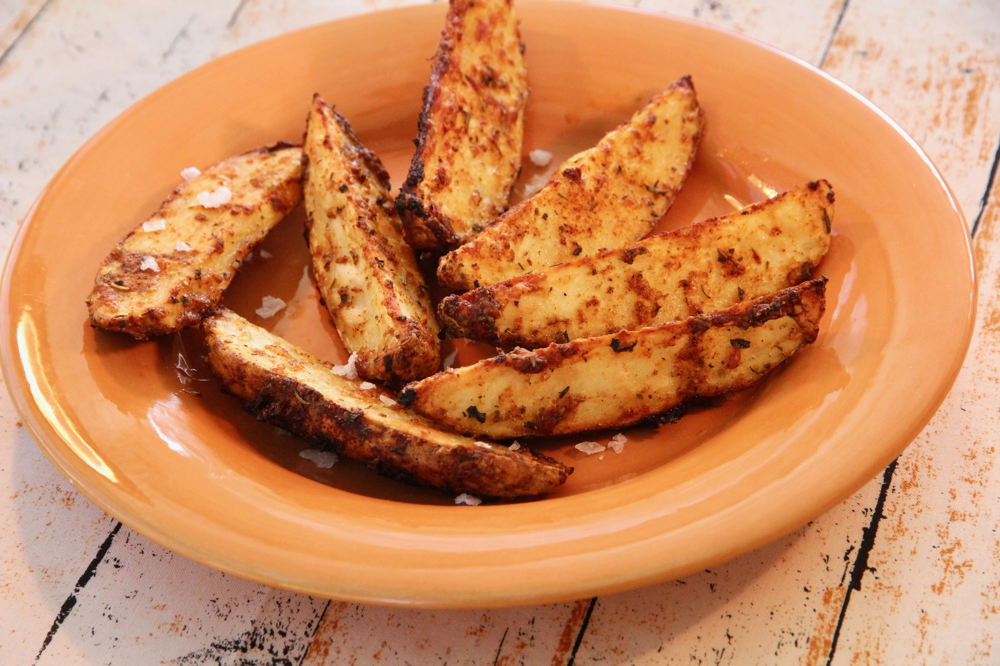

Peeled potato

Description
How to guide on the making of a peeled potato.
Content warning for the Irish.
Ingredients:
- potato
- water
- salt(optional)
Steps:
- Put your potatoes in a body of water
- Let them soak for a while, preferebly a couple of hours
- Take a potato out of the water
- Use a peeler, or a knife if you don't have one, to scrape the skin off of a potato.
- For difficult areas or indents, use a knife.
Back to index